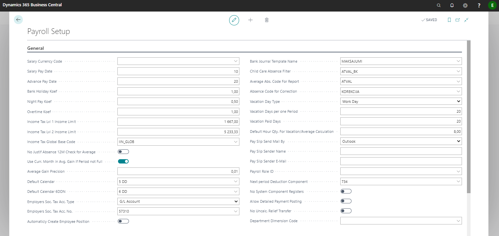
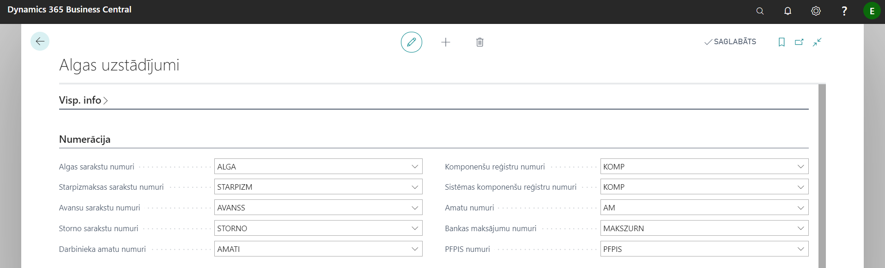
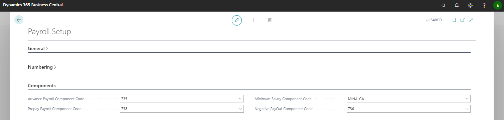
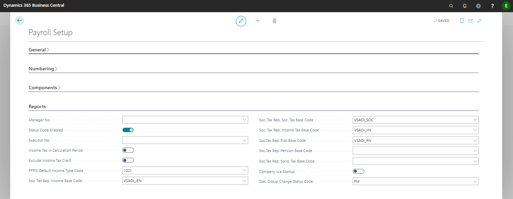

Payroll setup
When you apply the configuration package, the default settings are already complete, but we recommend that you review all the settings to suit your business needs.
Tab: General

| Field name | Description |
|---|---|
| Salary Currency Code | Specifies the payroll currency code. If salaries are calculated in local currency, leave the field blank. |
| Salary Pay Date | Specifies the payout date that appears on the payroll header and in the VSOAI report for State Revenue Service. |
| Advance Pay Date | Specifies the advance payment date that appears on the advance list header. |
| Bank Holiday Coef | The coefficient is used to calculate the allowance for working hours on public holidays and holidays. |
| Night Pay Coef | The coefficient is used to calculate the allowance for night work hours. |
| Overtime Coef | The coefficient is used to calculate the bonus for worked overtime. |
| Income Tax Lvl 1 Income Limit | Level 1 limit. |
| Income Tax Lvl 2 Income Limit | Level 2 limit, for employees with A1 certificate. |
| Income Tax Global Base Code | Used to facilitate the transition to another level. |
| No Justif Absence 12M Check for Average | This option works if the second feature “Use Curr. Month in Avg. Gain if Period not Full". If the attribute is not inserted, the current month is not taken if the duration of the eligible absence is less than 12 months, but if the duration of the absence is more than 12 months, the current month will be included in the calculation of average earnings. |
| Use Curr. Month in Avg. Gain if Period not Full | If this is activated, the System will first check the previous 6 calendar months to calculate the average earnings. If there have been working hours in the previous 6 calendar months, the system checks the first calendar month (from this 6-month period). If there were no hours in the first month - the system considers this to be an incomplete period and the current month is also used to calculate the average earnings. If there have been hours in the first month - the previous 6 calendar months are used to calculate the average earnings. If there have been no working hours in the previous 6 calendar months, the system checks the previous 12 calendar months. If there have been working hours in the previous 12 calendar months, the System checks the first calendar month (from this 12-month period). If there were no hours in the first month - the System considers that this is an incomplete period and the current month is also used to calculate the average earnings. If there have been hours in the first month - the previous 12 calendar months are used to calculate the average earnings. If there have been no working hours in the previous 12 calendar months, then the System uses only the data of the current month to calculate the average earnings. If there have been no working hours in the previous 12 calendar months, as well as in the current month - the minimum wage of the previous 6 calendar months will be used to calculate the average earnings. |
| Average Gain Precision | Indicates the precision (decimal point) with which the average earnings will be used in the calculations. |
| Default Calendar | National calendar for week of 5 workdays. |
| Default Calendar 6DDN | National calendar for week of 6 workdays. |
| Employers Soc. Tax Acc. Type | Specifies the account type to which the calculated employer social tax will be posted. |
| Employers Soc. Tax Acc. No. | Specifies the account to which the calculated employer's social tax will be posted. |
| Automatically Create Employee Position | If there is a check mark in this field, then when creating a new employee, a position card will be created automatically. |
| Bank Journal Template Name | Indicates the journal through which salary payments will be made from the bank account. |
| Child Care Absence Filter | The corresponding absence code. |
| Average Abs. Code For Report | Absence code for average earnings. |
| Absence Code for Correction | Code with which payroll recalculation lines appear in the Absence register. |
| Vacation Day Type | Indicates how the holidays are counted - Working days or Calendar days. |
| Vacation Days per one Period | Specifies the number of vacation days due per employee per period. |
| Vacation Paid Days | Specifies the number of paid vacation days due to each employee per period. |
| Default Hour Qty. For Vacation/Average Calculation | Indicate the default number of hours per day used in the compensation calculation as well as the average earnings. |
| Pay Slip Send Mail By | Indicates how to send salary slips - Outlook or SMTP protocol. In the case of SMTP, fill in the following fields. |
| Pay Slip Sender Name | Indicates the name that sends out pay slips. |
| Pay Slip Sender E-Mail | Specifies the e-mail through which payroll notes are sent. |
| Payroll Role ID | Indicate the role of the salary that gives the right to see all the information in the employee's card. Indicated only if a user partition with full and partial access is required. |
| Next period Deduction Component | Component used in correction transactions. In case a payment has already been made from the salary list, then in the next salary list of the current month this payment will be listed under the indicated salary component code. |
| No System Component Registers | Indicates if you do not want to use system-generated Component Register entries in payroll calculations. In case adjustments are required and the "Do not use" tick is enabled, notifications of adjustments are displayed during the calculation, but the register entries will not be created. |
| Allow Detailed Payment Posting | A check mark in this field indicates that the salary payment will be posted in detail, rather than grouping everything in one amount. Salary payments are exported to the payment journal and can be posted by the user with standard posting for each employee individually. In this case, in the general ledger can be seen how much each employee receives. Therefore, a second accounting function is provided for salaries, which can be grouped by dimension and then booked into payments. |
| No Uncalc. Relief Transfer | Indicate if you do not want that unapplied reliefs will be carried over to the following months' salary calculations. Unapplied reliefs are transferred through the entries in Component Register, which is created at the time of calculation. If at the time of the calculation there was an indication that the unapplied reliefs should not be carried over, then there will be no entry in the Component Register and they will not be taken into account next month. |
| Department Dimension Code | Specifies the default dimension code |
Tab: Numbering

| Field name | Description |
|---|---|
| Salary Nos. | Specifies the salary list number series. |
| Prepayment Nos. | Specifies the prepayment number series. |
| Advance Nos. | Specifies the advance payment number series. |
| Storno Nos. | Specifies the correction list number series. |
| Employee Position Nos. | Specifies the employee position number series. |
| Component Register Nos. | Specifies the Component register number series. |
| System Component Register Nos. | Specifies the number series for system Component register. |
| Position Nos. | Specifies the number series for system position register. |
| Bank Payment Nos. | Specifies the series of bank salary payment numbers. |
| PFPIS Nos. | Specifies the number series of the report document for State Revenue Services' "The amounts disbursed to the notice of a natural person" (PFPIS). |
Tab: Components

| Field name | Description |
|---|---|
| Advance Payroll Component Code | The specified component will appear on the salary list as a deduction from the advance list. |
| Prepay Payroll Component Code | The specified component will appear in the salary list as a deduction from the prepayment list. |
| Minimum Salary Component Code | Specifies the minimum salary component. |
| Negative PayOut Component Code | Specifies the negative payout component. |
Tab: Reports

| Field name | Description |
|---|---|
| Manager No. | Indicates the person who will sign the salary statements as manager. |
| Status Code Enabled | If this function is enabled, when filling in the date of recruitment or dismissal in the employee card, the system will automatically offer to enter the employee status code in the list Status codes, from which information for SRS report Information on employees is obtained. |
| Executor No. | Indicates the person who will sign the salary statements as executor. |
| Income Tax in Calculation Period | Indicates that SRS report “The employer's report on payed social and income tax” presents the personal income tax for the current period. |
| Exclude Income Tax Clarif. | The tick works only if no tick is inserted in “Income Tax in Calculation Period”. In case if “Exclude Income Tax Clarif” is enabled, VSAOI report will reflect the income tax amount of the previous calculation period in the income tax field. In case if “Exclude Income Tax Clarif” is not enabled, then the amount of income tax will include the income tax amount of the previous calculation period and the current monthly updates for the previous period. |
| PFPIS Default Income Type Code | It is used in the PFPIS report in case the employee was not granted benefits and no calculation was made because the employee was unpaid in absence. In this case, the default income code will be linked to the gain. |
| Soc. Tax Rep. Income Base Code | Indicates the revenue base for VSAOI report. |
| Soc. Tax Rep. Soc. Tax Base Code | Indicates the social tax base for the VSAOI report. |
| Soc. Tax Rep. Income Tax Base Code | Indicates the income tax base for the VSAOI report. |
| Soc. Tax Rep. Risk Base Code | Indicates the risk fee base for the VSAOI report. |
| Soc. Tax Rep. Pension Base Code | Indicates the pension contribution base for the VSAOI report. |
| Soc. Tax Rep. Solid. Tax Base Code | Specifies the solidarity tax base for the VSAOI report. |
| Company is a Startup | Attribute for VSAOI report. |
| Stat. Group Change Status Code | Status code for reports in case of position change. |